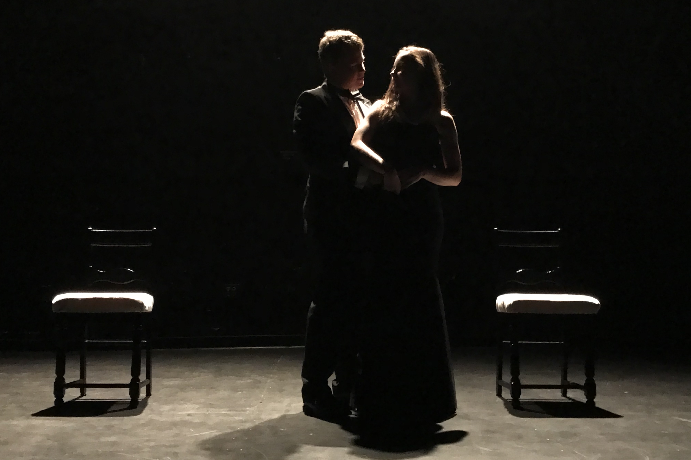

Directing and Lighting Design
A Gaggle of Saints: Winter 2018

 |
 |
Written by Neil Labute and starring Patrick Ryan '19, Lyndsey Toce '19, A Gaggle of Saints tells the story of a young couple's trip to a party in New York City. The play deals with the nature of hateful acts and those who commit them.
This play was the final project of a one-on-one tutorial in directing I undertook with my theater teacher, Laurie Sales, in the winter of my senior year at Groton. I directed these two students in the 40 minute play and then wrote a paper outlining my process and what I learned about directing over the term.
A Streak of Lavender: Spring 2017
 |
 |
Written by Mac Gallinson '17 and starring Charlie Hawkings '17, Max Solomon '19, and Carly Bowman '17, A Streak of Lavender tells the story of a theoretical interaction between a young Abraham Lincoln and Joshua Speed, a collegue and the center of a historical theory that Lincoln had a male lover before marrying Mary Todd.
I directed this play in the spring of my Junior year as part of our school's one-acts festival. I worked with the actors over the course of two months, rehearsing in afternoons after sports and my rehearsals for the mainstage production.
I also served as lighting designer for this show and served a supervisory and instructional role in the lighting design for the other six shows put on during the festival that year.
The Groton Project: Spring 2016

Starring Ethan Woo '16, Adia Fielder '17, Amy Lu '19, Josie Fulton '18, and Malik Gaye '18, The Groton Project was the result of interviews that I conducted with members of my school community who had dealt with issues of mental health in their time on campus.
Inspired by Tectonic Theater Company's The Laramie Project, the show was an example of documentary or verbatim theater, a technique where found text or interview material is used instead of words constructed by an author.
I served as writer, director, and lighting designer for this show as well as a supervisory and instructional role in the lighting design for the other five shows put on during the festival that year.